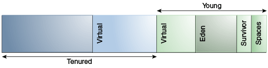

The parallel collector (also referred to here as the throughput collector) is a generational collector similar to the serial collector; the primary difference is that multiple threads are used to speed up garbage collection. The parallel collector is enabled with the command-line option -XX:+UseParallelGC. By default, with this option, both minor and major collections are executed in parallel to further reduce garbage collection overhead.
On a machine with N hardware threads where N is greater than 8, the parallel collector uses a fixed fraction of N as the number of garbage collector threads. The fraction is approximately 5/8 for large values of N. At values of N below 8, the number used is N. On selected platforms, the fraction drops to 5/16. The specific number of garbage collector threads can be adjusted with a command-line option (which is described later). On a host with one processor, the parallel collector will likely not perform as well as the serial collector because of the overhead required for parallel execution (for example, synchronization). However, when running applications with medium-sized to large-sized heaps, it generally outperforms the serial collector by a modest amount on machines with two processors, and usually performs significantly better than the serial collector when more than two processors are available.
The number of garbage collector threads can be controlled with the command-line option -XX:ParallelGCThreads=<N>. If explicit tuning of the heap is being done with command-line options, then the size of the heap needed for good performance with the parallel collector is the same as needed with the serial collector. However, enabling the parallel collector should make the collection pauses shorter. Because multiple garbage collector threads are participating in a minor collection, some fragmentation is possible due to promotions from the young generation to the tenured generation during the collection. Each garbage collection thread involved in a minor collection reserves a part of the tenured generation for promotions and the division of the available space into these "promotion buffers" can cause a fragmentation effect. Reducing the number of garbage collector threads and increasing the size of the tenured generation will reduce this fragmentation effect.
As mentioned earlier, the arrangement of the generations is different in the parallel collector. That arrangement is shown in Figure 6-1, "Arrangement of Generations in the Parallel Collector":
Figure 6-1 Arrangement of Generations in the Parallel Collector
The parallel collector is selected by default on server-class machines. In addition, the parallel collector uses a method of automatic tuning that allows you to specify specific behaviors instead of generation sizes and other low-level tuning details. You can specify maximum garbage collection pause time, throughput, and footprint (heap size).
Maximum Garbage Collection Pause Time: The maximum pause time goal is specified with the command-line option -XX:MaxGCPauseMillis=<N>. This is interpreted as a hint that pause times of <N> milliseconds or less are desired; by default, there is no maximum pause time goal. If a pause time goal is specified, the heap size and other parameters related to garbage collection are adjusted in an attempt to keep garbage collection pauses shorter than the specified value. These adjustments may cause the garbage collector to reduce the overall throughput of the application, and the desired pause time goal cannot always be met.
Throughput: The throughput goal is measured in terms of the time spent doing garbage collection versus the time spent outside of garbage collection (referred to as application time). The goal is specified by the command-line option -XX:GCTimeRatio=<N>, which sets the ratio of garbage collection time to application time to 1 / (1 + <N>).
For example, -XX:GCTimeRatio=19 sets a goal of 1/20 or 5% of the total time in garbage collection. The default value is 99, resulting in a goal of 1% of the time in garbage collection.
Footprint: Maximum heap footprint is specified using the option -Xmx<N>. In addition, the collector has an implicit goal of minimizing the size of the heap as long as the other goals are being met.
The goals are addressed in the following order:
Maximum pause time goal
Throughput goal
Minimum footprint goal
The maximum pause time goal is met first. Only after it is met is the throughput goal addressed. Similarly, only after the first two goals have been met is the footprint goal considered.
The statistics such as average pause time kept by the collector are updated at the end of each collection. The tests to determine if the goals have been met are then made and any needed adjustments to the size of a generation is made. The exception is that explicit garbage collections (for example, calls to System.gc()) are ignored in terms of keeping statistics and making adjustments to the sizes of generations.
Growing and shrinking the size of a generation is done by increments that are a fixed percentage of the size of the generation so that a generation steps up or down toward its desired size. Growing and shrinking are done at different rates. By default a generation grows in increments of 20% and shrinks in increments of 5%. The percentage for growing is controlled by the command-line option -XX:YoungGenerationSizeIncrement=<Y> for the young generation and -XX:TenuredGenerationSizeIncrement=<T> for the tenured generation. The percentage by which a generation shrinks is adjusted by the command-line flag -XX:AdaptiveSizeDecrementScaleFactor=<D>. If the growth increment is X percent, then the decrement for shrinking is X/D percent.
If the collector decides to grow a generation at startup, then there is a supplemental percentage is added to the increment. This supplement decays with the number of collections and has no long-term effect. The intent of the supplement is to increase startup performance. There is no supplement to the percentage for shrinking.
If the maximum pause time goal is not being met, then the size of only one generation is shrunk at a time. If the pause times of both generations are above the goal, then the size of the generation with the larger pause time is shrunk first.
If the throughput goal is not being met, the sizes of both generations are increased. Each is increased in proportion to its respective contribution to the total garbage collection time. For example, if the garbage collection time of the young generation is 25% of the total collection time and if a full increment of the young generation would be by 20%, then the young generation would be increased by 5%.
Unless the initial and maximum heap sizes are specified on the command line, they are calculated based on the amount of memory on the machine. The proportion of memory to use for the heap is controlled by the command-line options InitialRAMFraction and MaxRAMFraction, as shown in Table 6-1, "Proportion of Memory to Use for Heap". (In the table, memory represents the amount of memory on the computer.)
Table 6-1 Proportion of Memory to Use for Heap
| Heap Size | Formula | Default |
|---|---|---|
|
Initial heap size |
memory / |
memory / 64 |
|
Maximum heap size |
minimum value among memory / |
minimum value among memory / 4 and |
The value of MaxRAM is platform-dependent. On a 64-bit Solaris system with approximately 32 gigabytes (GB) of memory:
Maximum heap size: 8,588,166,144 bytes
Initial heap size: 536,760,384 bytes
Minimum heap size: 6,815,736 bytes
The parallel collector throws an OutOfMemoryError if too much time is being spent in garbage collection (GC): If more than 98% of the total time is spent in garbage collection and less than 2% of the heap is recovered, then an OutOfMemoryError is thrown. This feature is designed to prevent applications from running for an extended period of time while making little or no progress because the heap is too small. If necessary, this feature can be disabled by adding the option -XX:-UseGCOverheadLimit to the command line.
The verbose garbage collector output from the parallel collector is essentially the same as that from the serial collector.